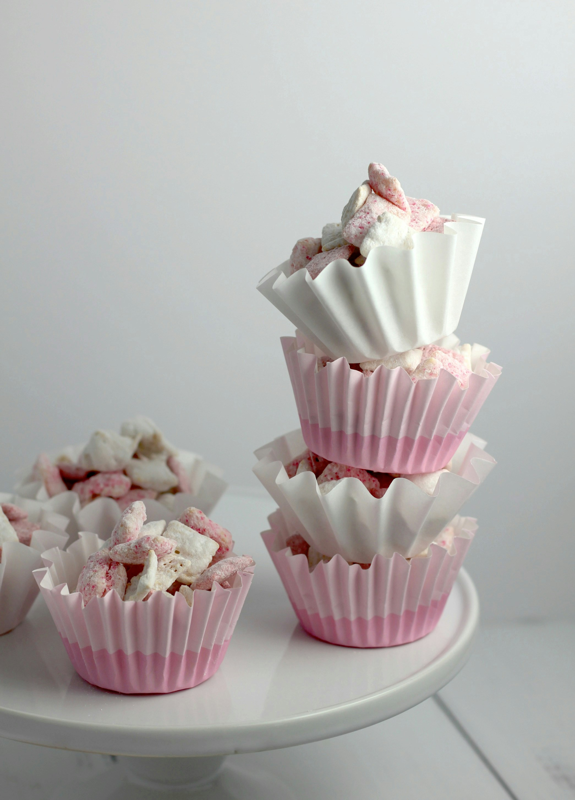

My Favorite Recipe
Puppy Chow
Ingredients
- 1 cup Chocolate chips
- 1 cup peanut butter
- 6-7 cups Rice Chex cereal
- 1-2 cups powdered sugar
Instructions
- melt peanut butter and chocolate together.
- add cereal to a large bowl. pour 1 cup of chocolate/peanut butter mixture over cereal.
- stir until cereal is coated.
- let mixture cool slightly.
- add powdered sugar. Mix until combined.
- you are ready to enjoy your puppy chow.